Uroradiology Briefs.
OUTLINE
- Usual introductory remarks.
- Tools of the trade in uroradiology.
- Trends in uroradiology.
- Discuss select pathologies in uroradiology.
- The classics of uroradiology.
- Epilogue.
INTRODUCTION
- Imaging modalities in uroradiology have undergone a dramatic transformation in the recent past.
- Earlier plain films were the only available study.
- Subsequently for no less than 7 decades IVU was the pillar of uroradiology.
- Today cross-sectional imaging studies have taken centre stage albeit without a definite flag bearer....
Plain Film. Natural Contrast.
- Perirenal fat gives a lucent outline to the kidneys and allows an assessment of their position to be made.
- The loss of the psoas outline may indicate retroperitoneal pathology but is a notoriously inaccurate sign.
IVU
- The excretory urogram is a valuable examination of the urinary tract.
- It gives excellent anatomical images of the kidneys and to some extent an indication of their function.
Patient preparation.
- Bowel preparation is useful but no longer essential. The plumber is unnecessary.
- Fluid restriction unless severe does not influence radiographic densities.
- At this severe level it becomes counter productive when it influences tubular function.
- Patients with diabetes and myeloma specifically require hydration.
Normal Nephrogram
- Final image of a tomographic sequence demonstrates symmetric nephrograms and pyelograms.
- Renal size is normal.

- Image obtained at 80 minutes shows a persistent, very dense right nephrogram, a typical finding in acute high-grade obstruction.
- A 2-mm stone was discovered at the right ureterovesical junction.
Right Renal Artery Stenosis.
- Fourth nephrotomogram from a "minute sequence" urogram (performed in the past for evaluation of renovascular hypertension) shows a small right kidney with decreased nephrographic density and temporal asymmetry of filling of the right collecting system compared with the left.
Simple Cyst.
- Nephrotomogram shows a nephrographic defect in the midportion of the left kidney (arrow) with increased parenchymal thickness and distortion of the underlying collecting system. US helped confirm a simple cyst.
Renal Cell Carcinoma.
- Nephrotomogram shows a mass in the midportion of the left kidney (arrows) producing increased parenchymal thickness and distorting the collecting system.

- Axis and position alteration.
- Nephrotomogram demonstrates characteristic axis alteration associated with a horseshoe kidney.
Epitaph For The Urogram
From the Department of Radiology, Albert Einstein College of Medicine and Montefiore Medical Center, 111 E 210th St, Bronx, NY 10467. Received July 29, 1999; accepted August 9.
Address reprint requests to the author (e-mail: amis@aecom.yu.edu).
- "The excretory urogram is terminally ill. It survives only because of clinicians and radiologists who do not fully appreciate that more accurate delineation of the urinary tract can be gained with other techniques. It is now time to move on to different techniques."
- Stephen Amis, Jr, MD
What has happened...
- The advent of cross-sectional imaging methods and their increasing sophistication over the quarter century of their existence has prompted uroradiologists to question the continued effectiveness of the urogram.
Hematuria.....
- The remaining major indication for excretory urography is hematuria.
- Patients with hematuria require evaluation of both the renal parenchyma and the urothelium.
- The traditional evaluation has been with cystoscopy and excretory urography (supplemented with retrograde ureteropyelography as needed).
The Last IVU Sermon....
- "In the near future, excretory urography will be replaced by nonenhanced helical CT to evaluate for stones and by CT urography to evaluate for hematuria and other genitourinary conditions.
- CT urography should be viewed simply as an evolution of urography, which survived for 7 decades as one of the mainstays in imaging of the urinary tract.
ULTRASOUND
- The ability to differentiate normal from abnormal is directly related to the skill of the ultrasonagrapher
- Resolution of pathology at an earlier stage is being recognised by improvement in US equipment.
- So updating of skills and equipment is also needed
ULTRASOUND IMAGE
- Composed of a variety of bright dots on a film that vary in intensity according to the strength of returning echoes from tissues or structures in the body
- Provides anatomic and nonanatomic information
NORMAL KIDNEY
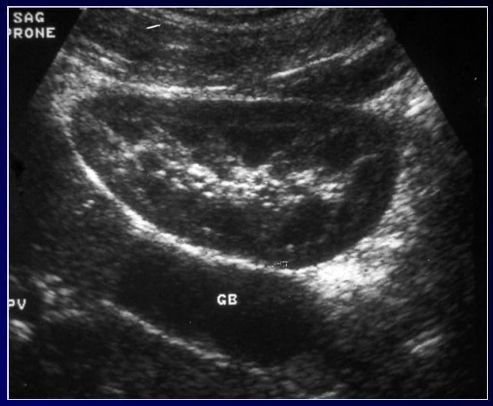
| Capsule | Hyperechoic |
| Cortex | Hypoechoic |
| Medulla | Almost anechoic |
| Sinus | Hyperechoic |
| Perirenal fat | Hyperechoic |
Renal lengths should be within 2 cm
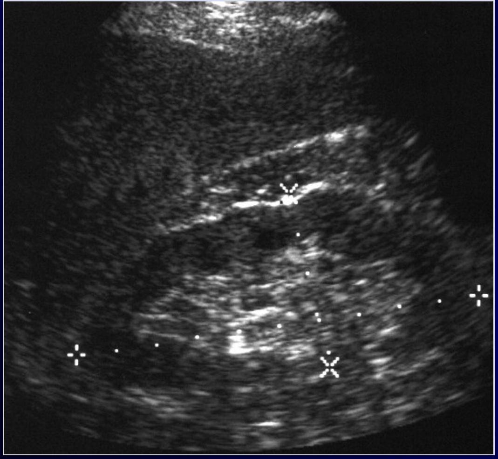 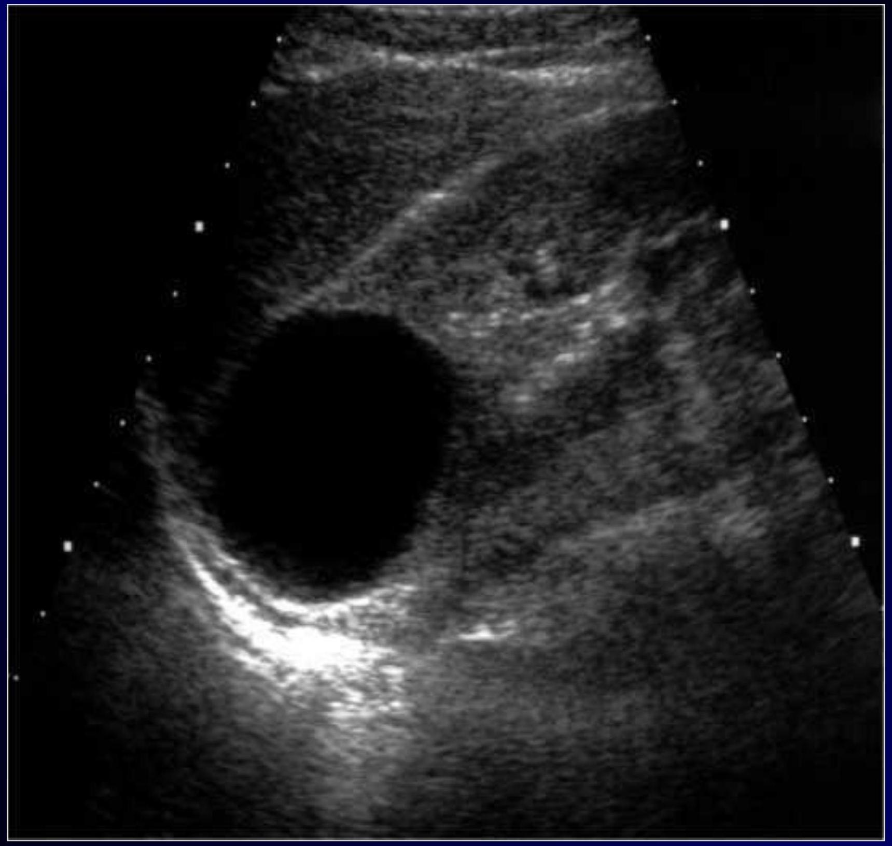 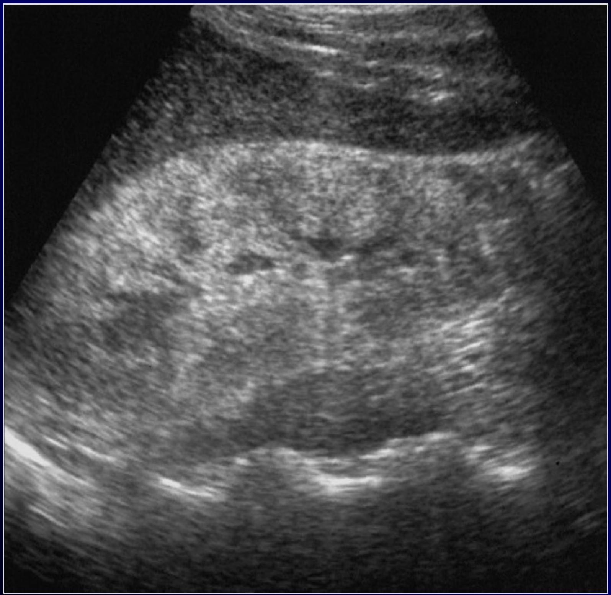Multi-Detector Row CT of the Kidneys and Urinary Tract
- Multi-detector row helical computed tomography (CT) offers considerable advantages in evaluation of the urinary tract.
- It has the potential to become the single imaging modality used for comprehensive evaluation and treatment planning of most conditions affecting the kidneys and urinary tract, making conventional diagnostic techniques such as intravenous urography and angiography nearly obsolete.

- With the introduction of multidetector technology, CT urography, to date, has emerged as the initial heir apparent to intravenous urography; many years of experience have now clearly demonstrated that CT is the test of choice for many urologic problems, including urolithiasis, renal masses, urinary tract infection,
CT Angiography of the Renal Arteries.
- The main applications of CT angiography include evaluation of potential renal donors, evaluation of suspected renal artery stenosis or aneurysms, and demonstration and location of crossing vessels prior to pyeloplasty for ureteropelvic junction obstruction.
- Emphysematous pyelonephritis in a 45-year-old woman with sepsis
MR Urography: Techniques and Clinical Applications
- Magnetic resonance (MR) urography comprises an evolving group of techniques with the potential for allowing optimal noninvasive evaluation of many abnormalities of the urinary tract.
- MR urography is clinically useful in the evaluation of suspected urinary tract obstruction, hematuria, and congenital anomalies, as well as surgically altered anatomy, and can be particularly beneficial in pediatric or pregnant patients or when ionizing radiation is to be avoided.
- Prostate cancer metastatic to lymph nodes in a 53-year-old man.
- Importance of cine MR urography in demonstrating the entire ureters with static-fluid techniques.
- (a) On a coronal thick-slab MR urogram from a cine series obtained in a 52-year-old woman with hematuria, the ureters are poorly delineated.
- (b) Coronal thick-slab MR urogram from the same series shows improved delineation of the ureters (arrows).
Prostate Gland.
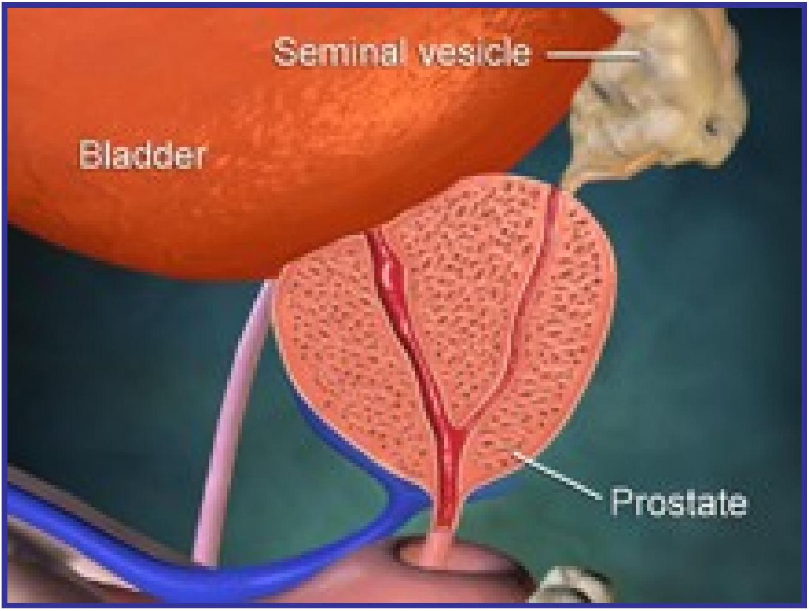
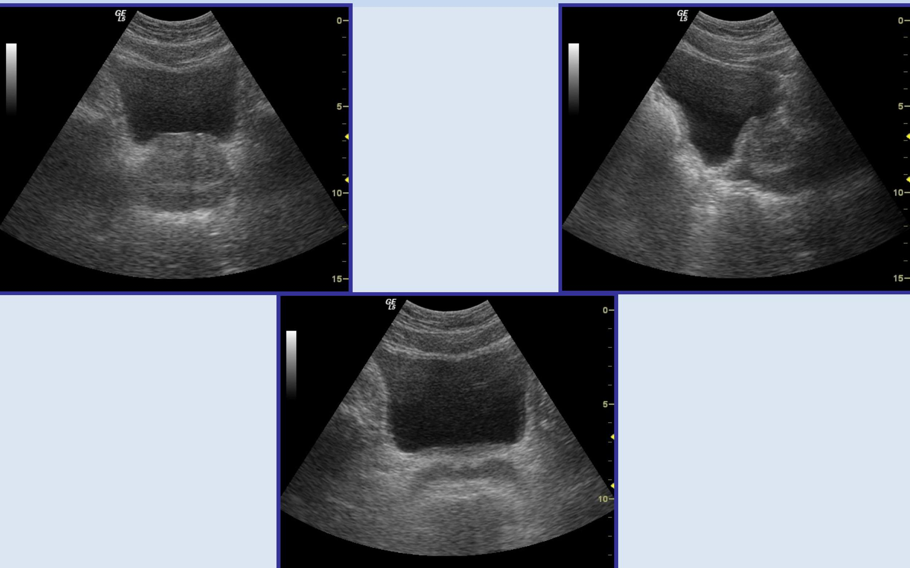
Transabdominal Sonography
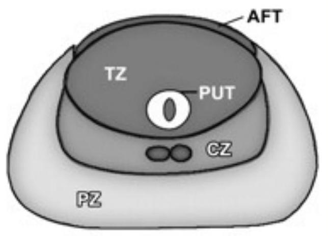TRUS. TRX
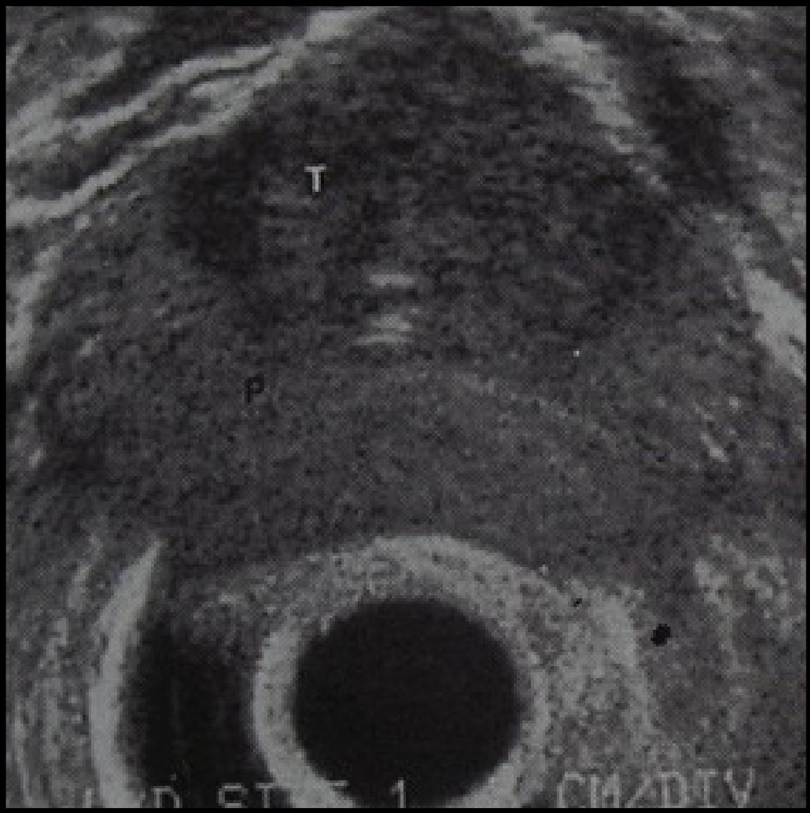 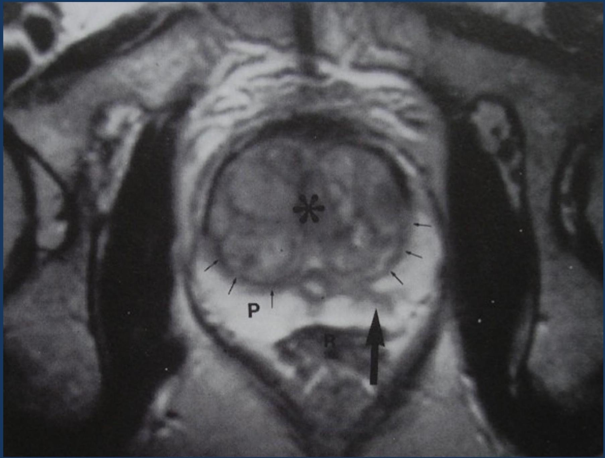 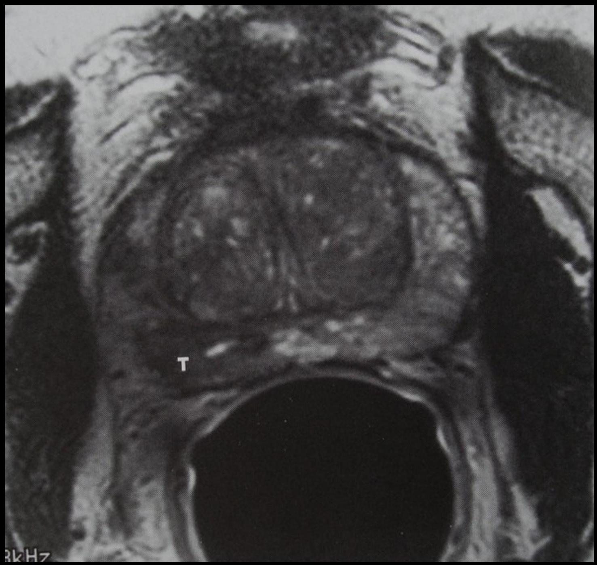 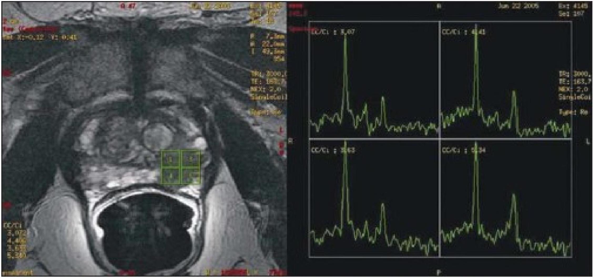Figure 8. MR axial T2-weighted image demonstrating a lesion with low signal-intensity on the left apical peripheral zone, and four contiguous voxels with a neoplastic spectral pattern (increased choline and decreased citrate levels).
NUCLEAR MEDICINE
"Unclear Medicine" ?
The use of small amounts of radioactive materials to diagnose and treat disease.
NUCLEAR MEDICINE SHOWS PHYSIOLOGY
Whereas
RADIOLOGY SHOWS ANATOMY
GENERATOR SYSTEM
- The basis of the generator system (the cow) is that the daughter is physically separable from the parent.
- This process is termed "milking".
- The eluate contains sodium pertechnetate.
- Since the generator system is small and can be shipped easily, it makes the routine use of 99 mTc possible in nuclear medicine
BILATERAL TESTICULAR INFARCTION
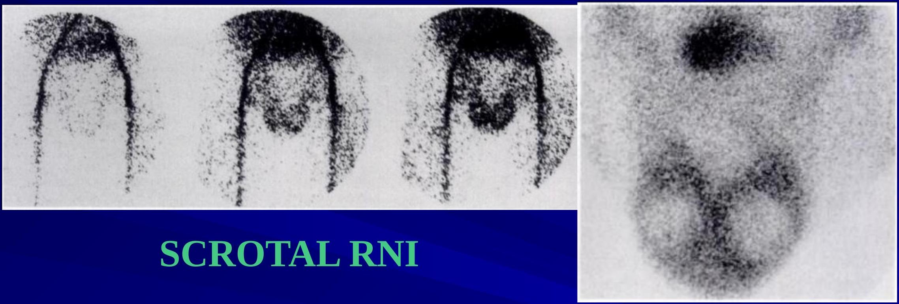- Testicular torsion leads to testicular infarction. Testicular ischemia may also result from epididymitis as in this pt.
- Early scintigraphic flow images show markedly increased flow to scrotal regions bilaterally. Tissue-phase scintigram shows increased peri-testicular activity with bilateral central regions of diminished activity.
Uroradiology classics.
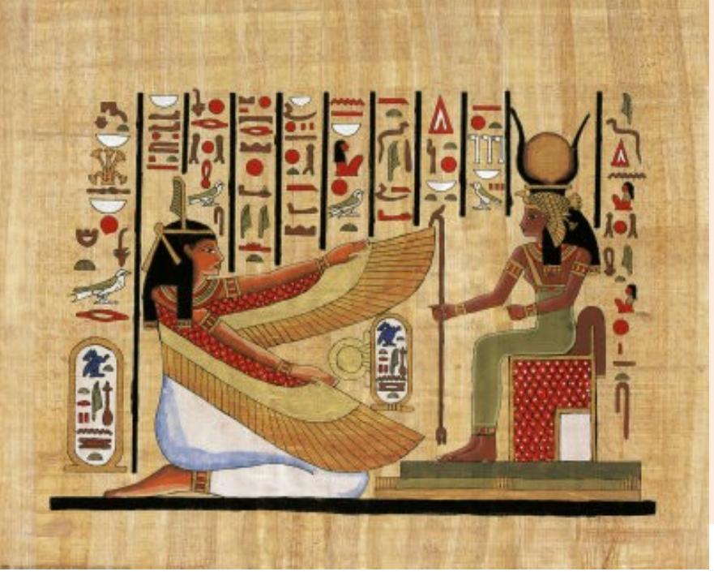
Radioglyphics
- The language of radiology is rich with descriptions of imaging findings, often metaphorical, which have found common usage in the day-to-day practice of genitourinary radiology.
- These "classic signs" give us confidence in our diagnosis.
- Some of the signs have become so familiar to us that they are referred to as an "Aunt Minnie."
Staghorn
- A renal stone described as a staghorn implies a branched renal calculus that resembles the antlers of a stag.
- It is usually composed of struvite; but less commonly, it is formed from cystine or uric acid.
- (a) Staghorns. (b) On a scout image obtained before excretory urography, a calculus fills nearly the entirety of a bifid right renal collecting system, giving it a branched appearance that resembles the antlers of a stag.
Bear's Paws Sign.
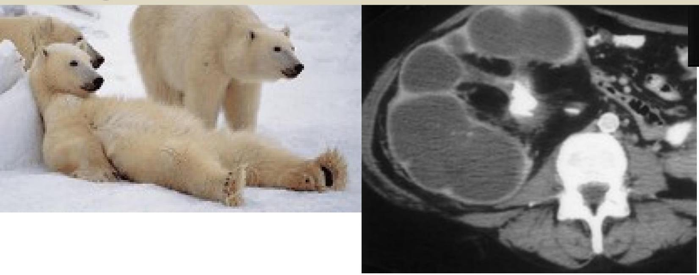
- (a) A bear's paws. (Photograph entitled "Bad Boys of the Arctic" reprinted with permission from Thomas D. Mangelsen, Inc.)
- (b) Contrast material-enhanced CT scan (same patient as in Fig 2) demonstrates a centrally obstructing stone with replacement of the renal parenchyma by low-attenuation collections in a "hydronephrotic" pattern. Note the lack of dilatation of the renal pelvis and infundibula.
- (c) CT scan obtained at a slightly lower level shows the fragments of a staghorn calculus within the parenchymal collections, which exhibit marginal enhancement. The pattern seen at CT resembles a bear's paw.
"Growing Calculus
- "Sponge" kidney, made from a sponge! (b) Scout image from excretory urography demonstrates calcifications clustered in the medullary portion of the left kidney. (c) After contrast material administration, numerous cavities are identified within the renal papilla in the patient with medullary sponge kidney. Some of the calcifications appear to grow, as contrast agent fills the entire cavity containing the stone.
Egg in Cup
- Papillary necrosis caused by analgesic abuse.
- Pyelographic image shows central cavities within multiple papillae (arrows).
Comet Sign.
- Comet. (Photograph entitled "Comet Hyakutake" reprinted with permission from Bill and Sally Fletcher.)
- (b) CT scan shows a calcification (the comet nucleus) (arrow) with a soft-tissue tail that represents a pelvic vein (arrowhead). Together, this appearance constitutes the comet sign. Note the stone at the left ureterovesical junction.
Spotted Nephrogram
- Irregular, patchy enhancement in the renal parenchyma, referred to as the spotted nephrogram, may occur as a result of small vessel occlusion, which can be seen with necrotizing vasculitis (periarteritis nodosa), scleroderma, and hypertensive nephrosclerosis
- Spotted cat. (Courtesy of Russell I. Poole, Mishawaka, Ind.)
- (b) Late image from midstream aortography demonstrates patchy perfusion in both kidneys, giving the parenchyma a spotted appearance: the spotted nephrogram.
- (c) Late image from selective right renal arteriography in the same patient demonstrates small vessel occlusion and multiple areas of parenchymal infarction (arrow) with islands of preserved perfusion. The patient proved to have periarteritis nodosa.
Crescent Sign
- The crescent sign refers to the appearance of concentrated contrast material in collecting tubules, arranged parallel to the margin of a dilated calix, which produces a thin line of contrast material at the edge of the calices, resembling a crescent.
- Crescent. (Photograph entitled "Moon with Earthshine" reprinted with permission from Bill and Sally Fletcher.)
- (b) Crescent sign. CT image obtained during the corticomedullary phase of enhancement shows decreased thickness of the parenchyma surrounding the dilated collecting system in the left kidney.
- (c) Concentrated contrast material crescents surround the dilated collecting system elements (arrows) on this delayed image, which also shows a urine-contrast agent level in the dependent aspect.
- Horseshoe kidney. (a) Horseshoe. (b) Enhanced CT image shows the functional isthmus of a horseshoe kidney anterior to the aorta, immediately beneath the inferior mesenteric artery (arrow).
AIIRENAL
- Lying down adrenal glands. US images of the right (a) and left (b) renal fossae demonstrate absence of the kidneys, and long, slender adrenal glands (arrows) in an infant with bilateral renal agenesis.
Balloon on a String Sign.
- The balloon on a string sign may be seen with the rim sign of hydronephrosis, with the crescent sign, or as an isolated finding.
- This sign refers to the appearance of a high and somewhat eccentric exit point of the ureter from a dilated renal pelvis and is a typical finding of ureteropelvic junction obstruction.
- (a) Baby with a balloon on a string (with thanks to Richard T. Dyer for his help with this photograph).
- (b) Balloon on a string sign. Delayed tomographic image from excretory urography shows caliceal crescents (arrowheads) surrounding the dilated collecting system. Contrast material pools dependently.
- (c) Image from retrograde ureteropyelography, performed after several weeks of ureteral stent placement, shows an eccentric exit of the ureter from the dilated renal pelvis. This appearance resembles a balloon on a string and is typical of ureteropelvic junction obstruction.
Epilogue.
- Thank you for offering me 40 minutes of your precious time.
- This is but the foundation of uroradiology.
- We can irrigate this nascent discipline then tropicalize it.